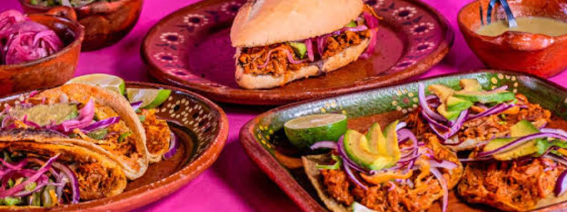
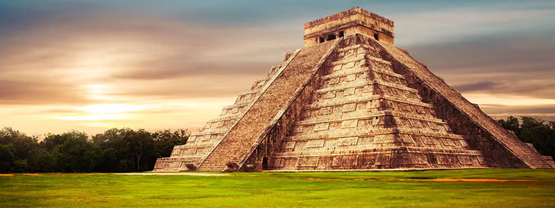

Dónde comer
En este buscador, vas a poder filtrar por nombre, tipo de establecimiento y por colonia
ver másEn este buscador, vas a poder filtrar por nombre, tipo de establecimiento y por colonia
ver más
En Yucatán vas a encontrar platos típicos y comida de todo el mundo
ver más
Conocé lugares mas atractivosen donde podés disfrutar de la mejor Yucatán
ver más